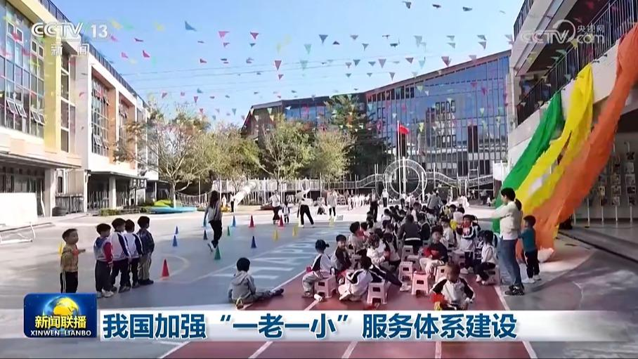
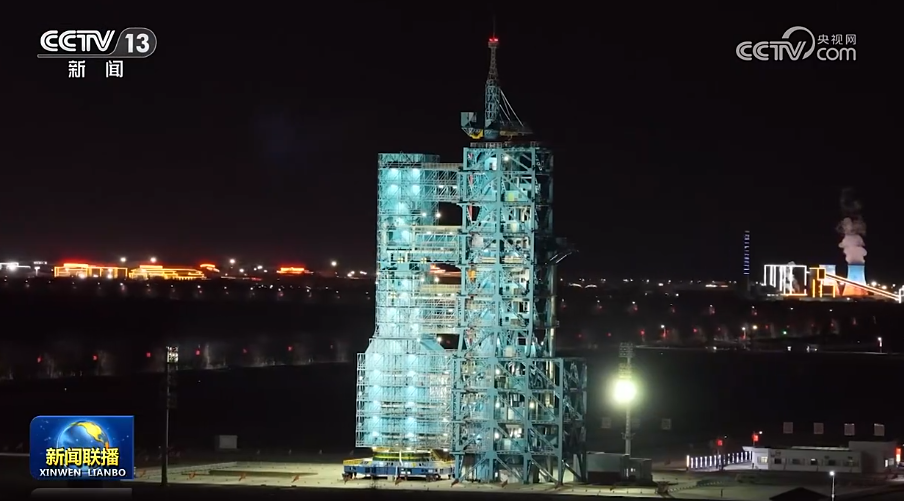
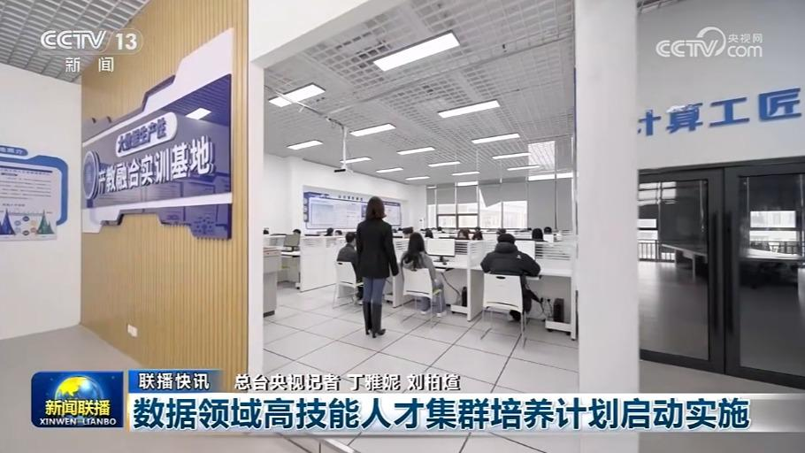
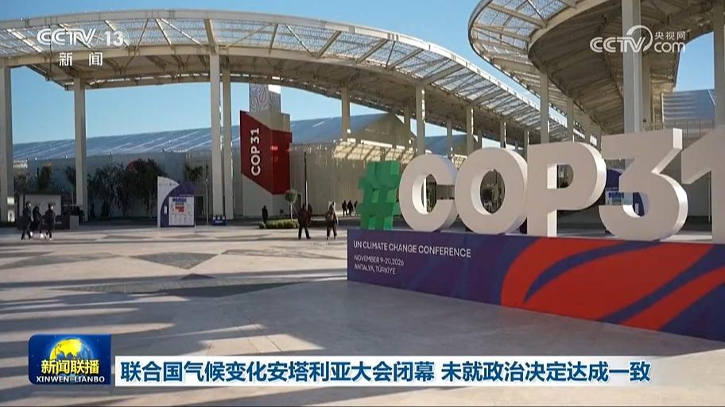
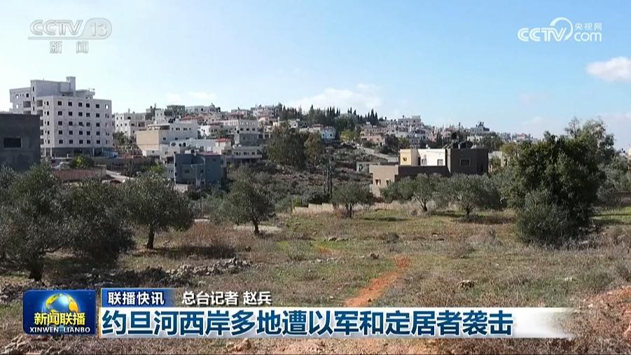

01
【新思想引领新征程】以人为本加快建设完整社区
习近平总书记强调，高质量推进城市更新是城市现代化建设的重要抓手，要全面践行人民城市理念，坚持问需于民、问计于民、问效于民，做深做细做实城市更新各项工作。今年以来，各地以绣花功夫推进城市更新，聚力打造完整社区，让百姓在家门口就能享受到步行可达、配套齐全、共治共享的社区服务。

习近平总书记强调，高质量推进城市更新是城市现代化建设的重要抓手，要全面践行人民城市理念，坚持问需于民、问计于民、问效于民，做深做细做实城市更新各项工作。今年以来，各地以绣花功夫推进城市更新，聚力打造完整社区，让百姓在家门口就能享受到步行可达、配套齐全、共治共享的社区服务。
我们党有1亿多名党员，540多万个基层党组织，这是推动党和国家事业发展的关键力量，也是世界上任何其他政党都不具有的强大优势。如何充分发挥党的组织优势？党的二十届五中全会对党的组织建设作出了一系列战略部署，来看今天（11月23日）的《权威访谈》。

今天（11月23日），由国家发展改革委等四部门联合印发的《“一老一小”服务体系建设实施方案》（以下简称《实施方案》）对外公布。《实施方案》明确，到2030年，“一老一小”服务体系进一步健全、供需适配度进一步提高，养老机构护理型床位占比达到73%，社区养老服务机构和设施覆盖率达到70%，3岁以下婴幼儿入托率较2025年提高6个百分点，基本形成覆盖城乡、布局合理、价格可接受、质量有保障的普惠养老、托育……
今年以来，各地积极调整优化住房公积金政策，将住房装修、物业费等纳入提取范围的同时，不断提升服务效能，更好满足居民多样化住房消费需求。

神舟二十四号载人飞船发射在即，目前，空间站与任务各系统准备工作顺利推进。今天（11月23日），北京航天飞行控制中心对中国空间站轨道姿态进行调整。这次，空间站将迎来首位外籍航天员，神舟二十三号乘组正在为新乘组的到来做好准备：整理舱内物资、清理舱内环境，备好生活物资与睡眠空间，调整再生生保参数，保障六人同时在轨的氧气、用水供给稳定。……
眼下，新一轮冰雪季陆续开启，各地推出多种举措、举办新活动，“冰雪经济”增长潜力持续释放，助力冬日旅游市场火热。
位于甘肃酒泉敦煌市的月牙泉，今年，水域面积超过32亩，创下20多年来的新高。然而这弯大漠清泉曾经濒临消失，泉底几乎裸露。那么它究竟是如何恢复生机的呢？来看记者的调研。

数据领域高技能人才集群培养计划启动实施

《联合国气候变化框架公约》第三十一次缔约方大会在延期两天后于22日闭幕。大会就发展中国家普遍关心的公正转型、减缓、适应、资金等议题达成一系列决定，但未能就政治决定达成共识。大会主席库鲁姆说，各方未能就有关文本达成一致，导致相关进程受阻。联合国秘书长古特雷斯对大会未能就一份全面成果文件达成共识表示失望。
22日，一艘停泊在利比亚东部班加西海军基地的俄罗斯船只遭袭起火。据利比亚媒体报道，火情已得到控制，港口及基地设施安全。22日晚，又有一艘商船在班加西沿海遭无人艇袭击，部分人员受伤。当天，利比亚“国民军”拦截了多艘无人艇。

约旦河西岸多地遭以军和定居者袭击